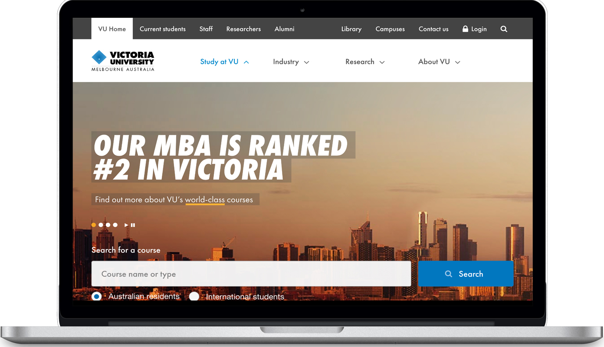
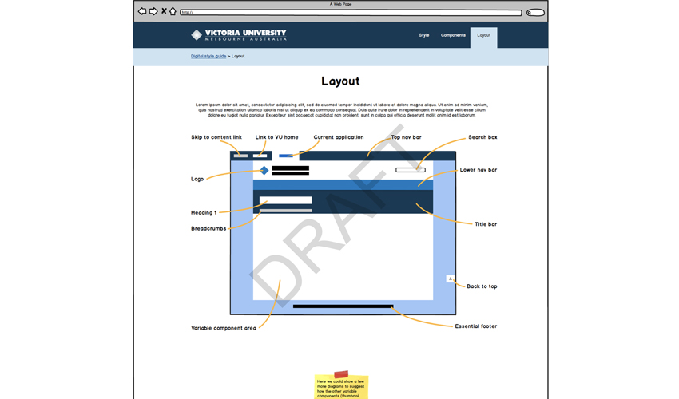
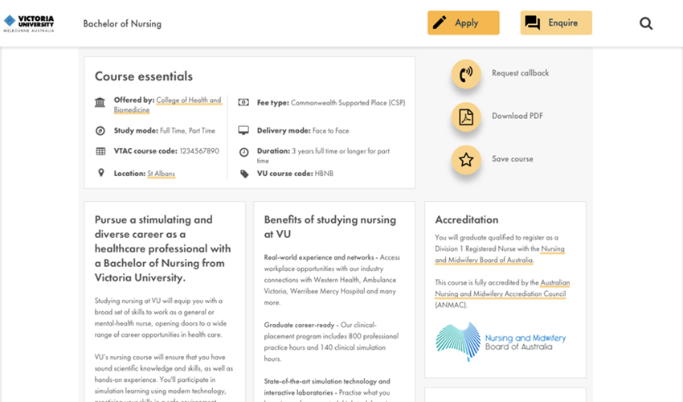
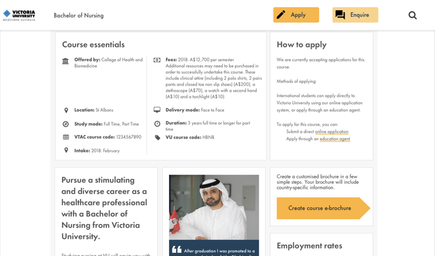
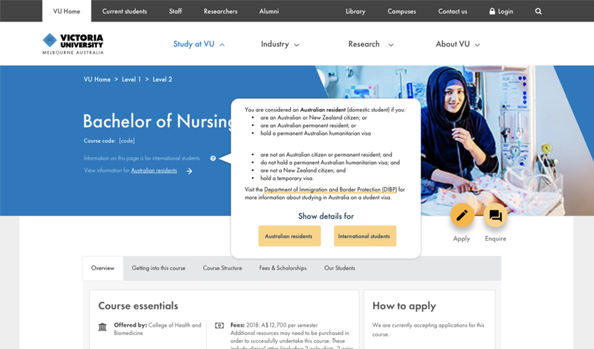
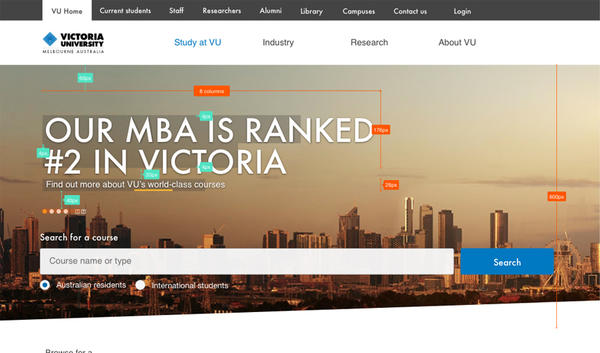

Victoria University, 2017
Domestic and international course application structure
Summary
VU Update to the domestic and international course application structure & online journey. Check out my user testing process documents; including a summary of the key take outs from the users feedback. Feel free to borrow from my processes. I've had 27 years to refine my UX practices --imparting my knowledge and experience is a big part of my core values.

Facilitated by the lovely Naomi
I’m not a big fan of hearing my own voice; so I was more than happy to co-ordinate and Produce the Testing Sessions.
If you're new to user testing keystrokes are distracting take notes with pen and paper dont use a laptop. User testing is quite exhausting and you’ll miss opportunities if you’re not alert. I like to give myself a 15 minute break between participants to freshen up, hydrate and clear my head. This applies to remote testing too.
If your project or employer doesn’t have the budget to perform testing do your own… It’s never stopped me. Find a mix of friends, co-workers, fellow UX’rs, neighbours, acquaintance and relatives. I recently tested the VBA practitioner portal to get an insight into the pain points builders are experiencing using the outdated system and figure out what functions they liked — I have three friends who are tradies; and none of them had even heard of the practitioner portal I needed users who had used it so over the course of a week I spent my lunch breaks walking around my area with an iPad and found myself some trades people who has used it in the past. It’s called Gorilla testing and its just as effective as coordinated testing.
Course Page structure

Domestic students

International students

Course Tabs & Tool tip

Hero structure
